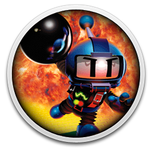

Bomberman (ボンバーマン Bonbāman?) es una franquicia de
videojuegosestratégico-laberínticos originalmente desarrollada por
Hudson Soft. El juego original fue lanzado en 1983, y desde entonces
se han lanzado nuevos juegos. Posee varios animes, entre ellos
Bomberman Jetters. Éste personaje tiene más de 60 juegos como
protagonista, antagonista o secundario como en Bomberman 64 y Wario
Blast!, y se encuentra en prácticamente todas las consolas de todo el
mundo. Tiene un gran éxito enJapón, aunque éste no es tan grande en
América. Su principal enemigo parece ser Mujoe, pero su archienemigo
es Bagura, aunque también tiene otros enemigos. El personaje fue la
mascota de Hudson Soft, quien poseía la totalidad de los derechos de
autor sobre Bomberman, pero dejando aNintendo y a Sega compartirlo,
siempre y cuando Hudson pudiese participar en otros juegos de éstas
compañías, como Mario Party, entre otros.

Historia
El juego Bomberman fue desarrollado por Hudson Soft para Nintendo
Entertainment System. Fue lanzado primero en Japón (Diciembre de 1985)
y luego en EE.UU. (Enero de 1989). El juego es de estrategia, y el
protagonista emplea de bombas para abrirse camino en los diversos
laberintos que atraviesa. La historia, según el propio manual, es la
siguiente: Bomberman es un robot que se especializa en la producción
de bombas. Él ha sido puesto a trabajar en un recinto subterráneo por
fuerzas malignas y eso hace su existencia pesada e insoportable. Pero
un día oye una historia según la cual, si logra llegar a la
superficie, podrá convertirse en un ser humano. Bomberman aprovecha la
oportunidad, pero algunos enemigos suyos se enteraron de su intento de
huída y se pusieron a perseguirlo sin cuartel.
Items
Mientras uno trata de encontrar la puerta para pasar de nivel, uno
puede encontrar diversos ítems reventando los bloques blandos. Estos
ítems pueden hacer más fácil el camino hacia afuera.
Bomba: Te permite poner una bomba más cada vez que lo agarres. El
máximo en este juego es de diez bombas.
Fuego: Incrementa el largo de tus explosiones por un bloque cada vez
que lo agarres. El máximo es de cinco bloques.
Detonador (Corazón): Te permite explotar las bombas cuando quieras. Si
perdés una vida vas a tener que encontrarlo de nuevo.
Patineta: Te permite moverte dos veces más rápido.
Muro: Te permite caminar entre los bloques blandos -entiéndase, los
que podés reventar a bombazos-.
Signo de interrogación: Te da invencibilidad ante bombas y enemigos
por 35 segundos.
Llama: Te hace invencible a tus propias bombas.